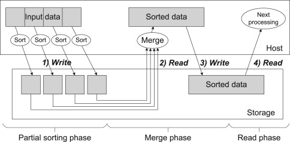
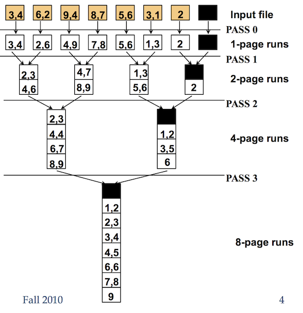

Wiki百科
外排序：（External sorting）是指能够处理极大量数据的排序算法。通常来说，外排序处理的数据不能一次装入内存，只能放在读写较慢的外存储器（通常是硬盘）上。外排序通常采用的是一种“排序-归并”的策略。在排序阶段，先读入能放在内存中的数据量，将其排序输出到一个临时文件，依此进行，将待排序数据组织为多个有序的临时文件。尔后在归并阶段将这些临时文件组合为一个大的有序文件，也即排序结果。
外排用于一个很经典的场景，即如何使用1G的RAM对20G的数据进行排序，或者去重。

xxxxxxxxxx创建多个临时文件file_1, file_2, file_3 ... file_n对每个文件进行sort然后重新写入两路归并归并操作：对于两个文件，按照一定的内存缓存区大小读入，进行归并排序，当缓冲区满时，写入中间临时文件。不断进行归并操作当进行了最后一次合并之后，则排序完成
two-way-external-sorting

// C++ program to implement external sorting using// merge sortusing namespace std;struct MinHeapNode { // The element to be stored int element; // index of the array from which the element is taken int i;};// Prototype of a utility function to swap two min heap nodesvoid swap(MinHeapNode *x, MinHeapNode *y);// A class for Min Heapclass MinHeap { MinHeapNode *harr; // pointer to array of elements in heap int heap_size; // size of min heappublic: // Constructor: creates a min heap of given size MinHeap(MinHeapNode a[], int size); // to heapify a subtree with root at given index void MinHeapify(int); // to get index of left child of node at index i int left(int i) { return (2 * i + 1); } // to get index of right child of node at index i int right(int i) { return (2 * i + 2); } // to get the root MinHeapNode getMin() { return harr[0]; } // to replace root with new node x and heapify() // new root void replaceMin(MinHeapNode x) { harr[0] = x; MinHeapify(0); }};// Constructor: Builds a heap from a given array a[]// of given sizeMinHeap::MinHeap(MinHeapNode a[], int size) { heap_size = size; harr = a; // store address of array int i = (heap_size - 1) / 2; while (i >= 0) { MinHeapify(i); i--; }}// A recursive method to heapify a subtree with root// at given index. This method assumes that the// subtrees are already heapifiedvoid MinHeap::MinHeapify(int i) { int l = left(i); int r = right(i); int smallest = i; if (l < heap_size && harr[l].element < harr[i].element) smallest = l; if (r < heap_size && harr[r].element < harr[smallest].element) smallest = r; if (smallest != i) { swap(&harr[i], &harr[smallest]); MinHeapify(smallest); }}// A utility function to swap two elementsvoid swap(MinHeapNode *x, MinHeapNode *y) { MinHeapNode temp = *x; *x = *y; *y = temp;}// Merges two subarrays of arr[].// First subarray is arr[l..m]// Second subarray is arr[m+1..r]void merge(int arr[], int l, int m, int r) { int i, j, k; int n1 = m - l + 1; int n2 = r - m; /* create temp arrays */ int L[n1], R[n2]; /* Copy data to temp arrays L[] and R[] */ for (i = 0; i < n1; i++) L[i] = arr[l + i]; for (j = 0; j < n2; j++) R[j] = arr[m + 1 + j]; /* Merge the temp arrays back into arr[l..r]*/ i = 0; // Initial index of first subarray j = 0; // Initial index of second subarray k = l; // Initial index of merged subarray while (i < n1 && j < n2) { if (L[i] <= R[j]) arr[k++] = L[i++]; else arr[k++] = R[j++]; } /* Copy the remaining elements of L[], if there are any */ while (i < n1) arr[k++] = L[i++]; /* Copy the remaining elements of R[], if there are any */ while (j < n2) arr[k++] = R[j++];}/* l is for left index and r is right index of thesub-array of arr to be sorted */void mergeSort(int arr[], int l, int r) { if (l < r) { // Same as (l+r)/2, but avoids overflow for // large l and h int m = l + (r - l) / 2; // Sort first and second halves mergeSort(arr, l, m); mergeSort(arr, m + 1, r); merge(arr, l, m, r); }}FILE *openFile(char *fileName, char *mode) { FILE *fp = fopen(fileName, mode); if (fp == NULL) { perror("Error while opening the file.\n"); exit(EXIT_FAILURE); } return fp;}// Merges k sorted files. Names of files are assumed// to be 1, 2, 3, ... kvoid mergeFiles(char *output_file, int n, int k) { FILE *in[k]; for (int i = 0; i < k; i++) { char fileName[2]; // convert i to string snprintf(fileName, sizeof(fileName), "%d", i); // Open output files in read mode. in[i] = openFile(fileName, "r"); } // FINAL OUTPUT FILE FILE *out = openFile(output_file, "w"); // Create a min heap with k heap nodes. Every heap node // has first element of scratch output file MinHeapNode *harr = new MinHeapNode[k]; int i; for (i = 0; i < k; i++) { // break if no output file is empty and // index i will be no. of input files if (fscanf(in[i], "%d ", &harr[i].element) != 1) break; harr[i].i = i; // Index of scratch output file } MinHeap hp(harr, i); // Create the heap int count = 0; // Now one by one get the minimum element from min // heap and replace it with next element. // run till all filled input files reach EOF while (count != i) { // Get the minimum element and store it in output file MinHeapNode root = hp.getMin(); fprintf(out, "%d ", root.element); // Find the next element that will replace current // root of heap. The next element belongs to same // input file as the current min element. if (fscanf(in[root.i], "%d ", &root.element) != 1) { root.element = INT_MAX; count++; } // Replace root with next element of input file hp.replaceMin(root); } // close input and output files for (int i = 0; i < k; i++) fclose(in[i]); fclose(out);}// Using a merge-sort algorithm, create the initial runs// and divide them evenly among the output filesvoid createInitialRuns(char *input_file, int run_size, int num_ways) { // For big input file FILE *in = openFile(input_file, "r"); // output scratch files FILE *out[num_ways]; char fileName[2]; for (int i = 0; i < num_ways; i++) { // convert i to string snprintf(fileName, sizeof(fileName), "%d", i); // Open output files in write mode. out[i] = openFile(fileName, "w"); } // allocate a dynamic array large enough // to accommodate runs of size run_size int *arr = (int *) malloc(run_size * sizeof(int)); bool more_input = true; int next_output_file = 0; int i; while (more_input) { // write run_size elements into arr from input file for (i = 0; i < run_size; i++) { if (fscanf(in, "%d ", &arr[i]) != 1) { more_input = false; break; } } // sort array using merge sort mergeSort(arr, 0, i - 1); // write the records to the appropriate scratch output file // can't assume that the loop runs to run_size // since the last run's length may be less than run_size for (int j = 0; j < i; j++) fprintf(out[next_output_file], "%d ", arr[j]); next_output_file++; } // close input and output files for (int i = 0; i < num_ways; i++) fclose(out[i]); fclose(in);}// For sorting data stored on diskvoid externalSort(char *input_file, char *output_file, int num_ways, int run_size) { // read the input file, create the initial runs, // and assign the runs to the scratch output files createInitialRuns(input_file, run_size, num_ways); // Merge the runs using the K-way merging mergeFiles(output_file, run_size, num_ways);}// Driver program to test aboveint main() { // No. of Partitions of input file. int num_ways = 10; // The size of each partition int run_size = 1000; char input_file[] = "input.txt"; char output_file[] = "output.txt"; FILE *in = openFile(input_file, "w"); srand(time(NULL)); // generate input for (int i = 0; i < num_ways * run_size; i++) fprintf(in, "%d ", rand()); fclose(in); externalSort(input_file, output_file, num_ways, run_size); return 0;}http://web.eecs.utk.edu/~leparker/Courses/CS302-Fall06/Notes/external-sorting2.html
http://www.csbio.unc.edu/mcmillan/Media/Comp521F10Lecture17.pdf